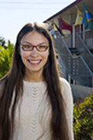
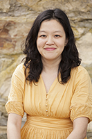
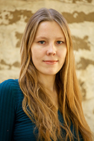

Рэйчел Зубиате
Содиректор, руководитель испанской программы
Рэйчел из Феникса, штат Аризона, и имеет степень бакалавра на английском языке с концентрацией в лингвистике и BA на русском из Университета штата Аризона. Она путешествовала в Казань, Россия, и Киеве, Украине, изучения языка. Она собирает детские книги на других языках.

Джиа Канг
Содиректор, руководитель корейской программы
Джиа Канг вырос в Балтиморе, штат Мэриленд, и получил степень бакалавра на английском и культурной антропологии с кино / видео / цифровой сертификат от Университета Дьюка. Она провела 4 года в Корее преподавания английского языка, изучая корейский, и работал в качестве писателя и редактора в учебник английского языка издательства для учащихся начальной школы. Она любит путешествовать и гурман в сердце.
Ингди Ци
Содиректор, руководитель китайской программы
Ингди родом из провинции Цзинань, Китай. Она является большим поклонником языков и технологий. Она имеет степень бакалавра на английском языка и литературы и кросс-культурной коммуникации. Она страстно о помощи в организации адаптировать свои услуги и продукт, чтобы он привлечь больше людей в разных культурных традиций и тем самым повлиять на их жизнь.

Ольга Мельникова
Содиректор, руководитель российской программы
Ольга из Калуги, России и занимает 2 степени бакалавра (один в преподавании французского и английского языка и еще один в творческой письменности). Она была переводчик с английского и французского на русский в течение семи лет до перехода на локализации и управления проектами. Она также работала в качестве французского переводчика-русский суда в течение 2 лет. Играет на гитаре и поет песни, которые она сочиняет, проводит по крайней мере 1 месяц в год в Европе (в основном Франция), волонтеров для различных российских благотворительных организаций.